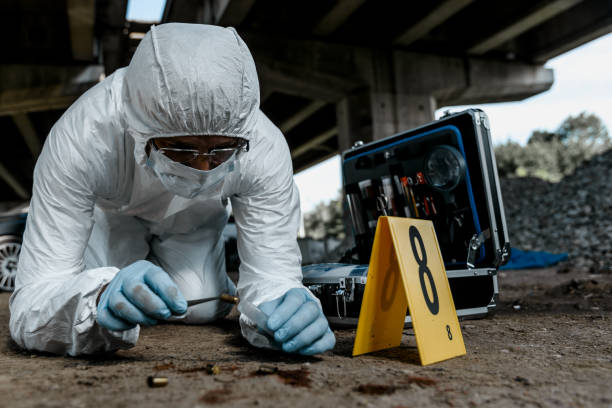
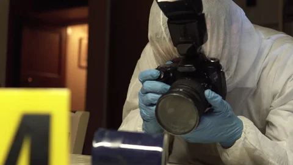
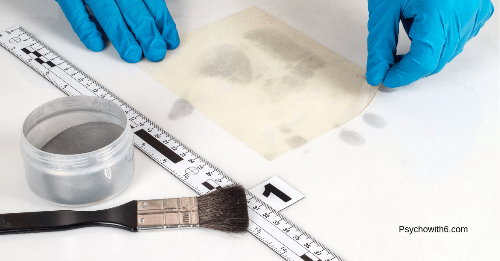
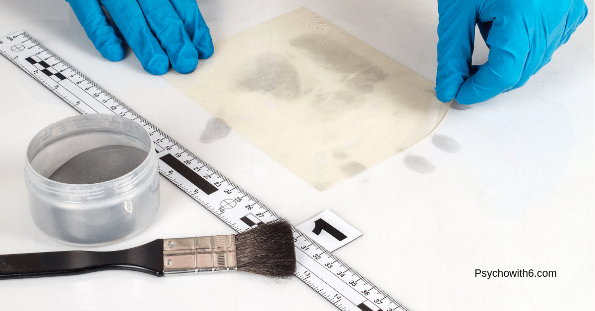
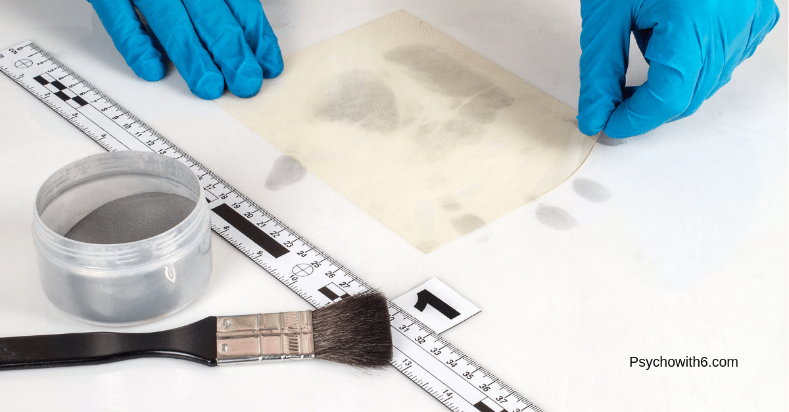

Joana Cabrera
I am a committed Crime Scene Investigator with a deep passion for uncovering the truth and helping bring justice to light. My journey into this field began with a degree in Sociology from UC Riverside, where I developed a strong foundation in evidence collection, crime scene documentation, and investigative techniques. Early in my career, I worked as a detective, focusing on fingerprint analysis, biological sampling, and crime scene photography. These experiences not only sharpened my technical skills but also instilled in me a strong sense of responsibility and purpose. Over the years, I’ve led numerous investigations, collaborating with law enforcement, forensic labs, and legal teams to reconstruct events and present evidence with accuracy and integrity. The ability to piece together clues and give a voice to the evidence is what drives my passion for this profession.
While my professional life revolves around precision and critical thinking, my hobbies and personal interests provide balance and perspective. Basketball has always been a cornerstone of my life, teaching me the importance of teamwork, discipline, and perseverance. Whether I’m playing a casual pickup game or practicing on my own, I find that the focus and resilience I cultivate on the court carry over into my approach to investigations. In addition to basketball, I have a deep love for reading. True-crime stories, sociology texts, and thought-provoking literature help me broaden my understanding of human behavior, which is invaluable in my work as a CSI. These hobbies not only recharge me but also inspire me to approach cases with fresh perspectives and empathy for the lives impacted by the evidence I uncover.
Beyond my technical expertise, I am committed to ongoing learning and mentorship. Staying ahead of advancements in forensic technology and investigative methods is essential in a field that evolves rapidly. I regularly attend workshops and conferences to ensure that my skills remain sharp and relevant. I also find joy in mentoring aspiring investigators, helping them navigate the complexities of the field while emphasizing the importance of ethics, compassion, and attention to detail. For me, CSI work is more than a career—it’s a calling that merges my natural curiosity, analytical mindset, and desire to make a meaningful impact. Each day presents unique challenges, but I approach them with dedication, knowing that my efforts contribute to the pursuit of truth and justice.
Experience
Developer
• Crime Scene Investigator: Conduct investigations, analyze evidence, and collaborate with law enforcement.
• Forensic Technician: Assisted in evidence photography, fingerprint collection, and biological sampling for active investigations.
• Intern: Supported crime scene processing, managed evidence logs, and participated in chain-of-custody training.
Teaching Assistant
• Ran sessions to help students learn how to look for on seen clues
• Reviewed and graded student detective projects with their clues/investigations
• Created educational content to help promote student education
• TA'd for over 200 students each academic quarter
Education
UC Riverside
University of California Riverside
University of California Riverside
Portfolio


 

